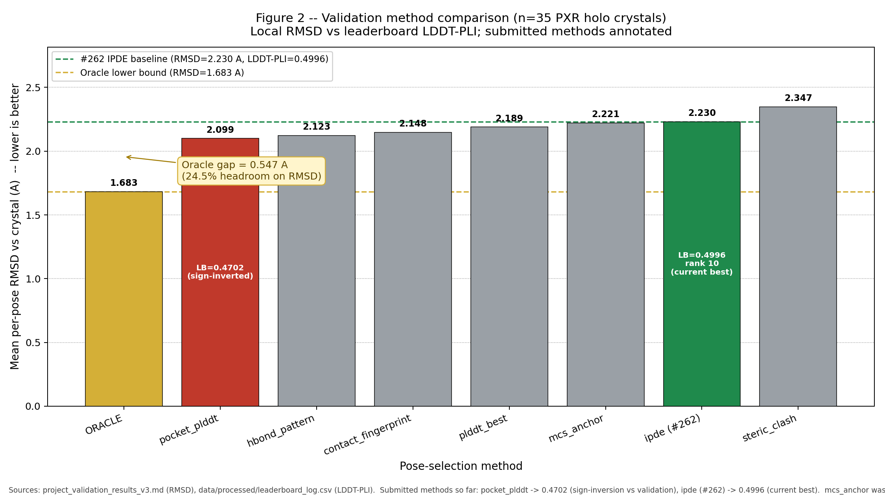
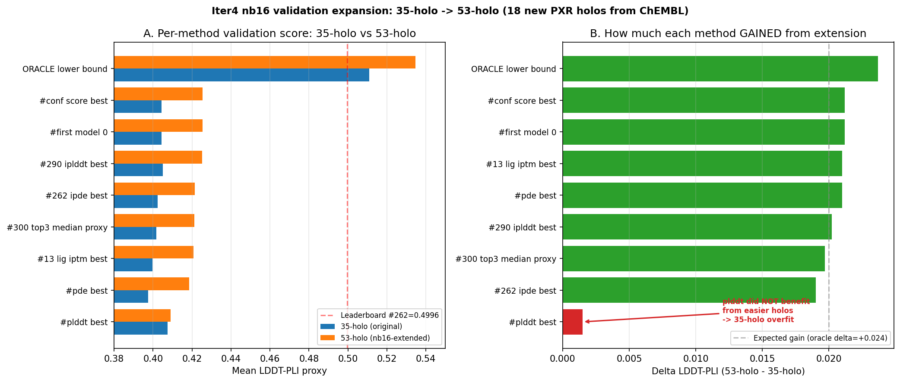
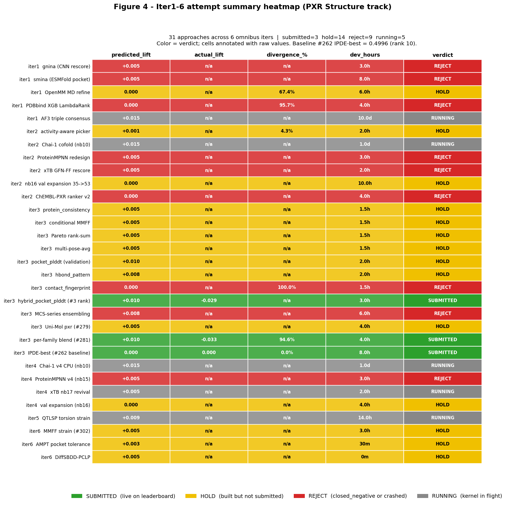
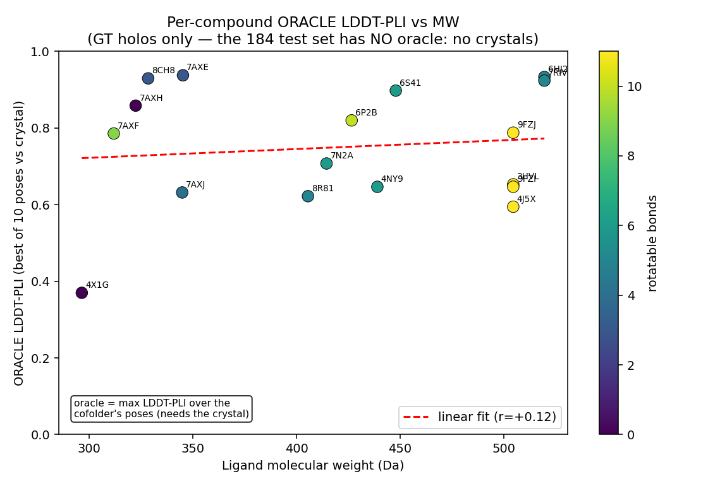

Challenge
Predict 184 PXR protein-ligand complexes as PDBs, scored by LDDT-PLI.
A reason-guided, late-night lab report on why the best entry was not the loudest ensemble in the room. It was calibrated model confidence, one small Protenix rescue, and a lot of experiments told politely to leave.
Final protected artifact: submissions/prot_rescue8.zip.
Local evidence snapshot: 2026-06-30.
The final answer was a 4-model z-hybrid base, then Protenix-v2 only on the 8 ligands where the base ensemble was least confident.
Predict 184 PXR protein-ligand complexes as PDBs, scored by LDDT-PLI.
Within-model confidence, z-scored across ligands so AF3, Boltz, OF3, and Chai can be compared.
Targeted Protenix rescue peaked at 8 swaps: 0.5640 LDDT-PLI.
Selection without ground truth. Many plausible poses were not native poses.
Read the project in this order. The repo has hundreds of scripts, but the scientific story is a clean sequence: fair ensemble, long-tail rescue, then increasingly ambitious ways to improve the hard cases.
The first winning move was not a handcrafted pose rule. It was a calibrated model tournament: score each model internally, z-score its confidence across the 184 ligands, then let the highest-z model win per ligand. This made AF3, Boltz-2, OpenFold3, and Chai comparable without pretending their raw confidence numbers meant the same thing.
The important caveat: "add every model as a full member" was tested and refuted. Protenix/IntFold-style full z-hybrid expansion could over-select confident wrong poses. The winning ensemble used broad model diversity as a base, then applied new models surgically.
Once the base was stable, the next question was not "can we change all 184?" It was "where does the ensemble itself admit it is weak?" Ranking ligands by low pool z-score exposed the failure tail. Swapping that tail to Protenix-v2 created the best submission.
The bracket mattered: 4 swaps undershot, 12 and 20 swaps overreached, and 8 swaps peaked at 0.5640. The long tail was real, but it was not an invitation to renovate the entire house on live television.
After the tail-rescue win, the natural next move was model improvement: OF3 fine-tuning, Protenix/NR-family fine-tuning, IntFold variants, and harvested new-model pools. These were aimed at raising the generation floor, not merely reshuffling the same old poses.
The live competition work did not produce a better final artifact. The post-competition path is clearer: combinatorial fine-tuning across nuclear receptors, all promiscuous-binder systems, and SAIR-style public cofold corpora could create the missing PXR/NR-specific prior.
Next came the biology-informed levers: PXR holo templates, CAR/VDR/NR templates, soft pocket constraints, corrected protonation states, and targeted anchor restraints for hard-tail ligands. The idea was sound: give the model more receptor-family context and better chemical state.
The result was humbling. Generic anchors and templates often hurt PanDDA fragments because fragments explore sub-pockets that drug-like holo priors do not cover. Constraints are useful when the anchor is known; without ground truth, they can turn a weak prior into a very confident wrong answer.
MSA depth became a separate hypothesis: too much evolutionary context might lock the receptor into a familiar state, while shallow or selective MSA could let ligand chemistry drive induced-fit placement. ESMFold2 and Boltz-style MSA variants were the practical tests.
Full-MSA ESMFold2 was weak as a standalone model and weaker than Protenix as an 8-ligand rescuer. The idea remains scientifically plausible, but the useful version would need systematic shallow, selective, and per-family MSA sweeps with enough submission or GT bandwidth to separate signal from noise.
Local refinement was the "surely physics can polish this" phase: OpenMM minimization/MD, docking-style local refinement, MMFF/xTB strain checks, orientation fixes, and induced-fit ideas. These were tested as correction layers on top of model poses.
The consistent read was that local physics can validate or reject broken geometry, but it did not reliably move an unlabeled pose into the native binding mode. If the ligand starts in the wrong basin, refinement mostly makes the wrong basin look tidier.
The final major axis was learned or reasoning-based selection: XGBoost/LambdaMART pose scoring, RMSD-Pred, agentic pool selection, medchem annotations, SAR-informed review, and conservative flip filters. This directly attacked the selection wall.
Broad selectors failed on transfer. The learned scorer scored 0.4762; the full agentic pool selector scored 0.5140. The smaller, conservative annotation and flip filters nearly matched the best but did not beat it. Translation: medchem reasoning is valuable as a small gate, but not as a full replacement for model confidence without released GT.
The remaining credible path was not another clever one-off selector. It was more and better generation: massive sampling, more recycling, model heads that learn PXR/NR-specific ligand-interface quality, and training runs that incorporate affinity data plus medchem annotations as auxiliary supervision.
The dream version: AF3-style custom heads for PXR/NR, combinatorial fine-tuning across all nuclear receptors and promiscuous binders, and SAIR-derived public cofold data filtered to receptor-family relevance. That is how you attack the 0.0085 gap to the leader without asking unlabeled chemistry to do crystal-structure magic tricks at 2 a.m.
Here is the exact logic of prot_rescue8, with the jokes
wearing lab goggles and staying inside the confidence interval.
The repo assembled candidate poses for each of the 184 blinded ligands from multiple cofolders: AF3, Boltz-2, OpenFold3, Chai-1, Protenix-v2, ESMFold2, IntFold, and several later rescue variants. The final base used four sources: AF3, Boltz-2, OpenFold3, and Chai.
Before models competed against each other, each model chose its own
best candidate. Boltz-2 used negative complex_ipde,
OpenFold3 used pocket-to-ligand PAE or interface confidence, and
AF3/Chai used their ranking/interface confidence fields.
This matters because raw confidence scales are not interchangeable. One model's "confident" can be another model's polite shrug wearing a tuxedo.
The method z-scored each model's best-pose confidence across all 184 ligands. That converted each model into a relative signal: "how good does this ligand look compared with this same model's usual behavior?"
In ai_4model_base_selection.csv, the base picks were
balanced: AF3 won 44 ligands, Boltz-2 won 34, OpenFold3 won 54, and
Chai won 52. No single model got to host the entire show.
For each ligand, the final base kept the pose from whichever of the four base models had the highest calibrated confidence. This was the disciplined ensemble: winner-take-one per ligand, not averaging coordinates or voting by vibes.
Key scripts:
scripts/build_nmodel_zhybrid.py
and
scripts/build_ai_4model_zhybrid.py.
m, ligand i, and sample
k, compute a raw confidence signal
r[m,i,k]. First choose the best sample inside each
model, k* = argmax_k r[m,i,k]. Then calibrate that
model's best-sample signals across all 184 ligands:
z[m,i] = (r[m,i,k*] - mean_i r[m,i,k*]) / std_i r[m,i,k*],
with a fallback standard deviation of 1.0 if needed. The base pose
for ligand i is copied from argmax_m z[m,i].
Translation for the studio audience: every model gets graded on its
own curve, then the highest curved grade wins the ligand.
| Model | Raw signal used for r[m,i,k] |
Why that direction |
|---|---|---|
| Boltz-2 | -complex_ipde |
Lower predicted interface distance error is better, so the sign is flipped. |
| OpenFold3 | -mean(PAE[protein residues 1:293, ligand tokens]), falling back to chain_pair_iptm(A,L) |
Lower protein-ligand PAE, or higher interface pTM when PAE was not exported. |
| AF3 | Best exported AF3 ranking/interface score in af3_best/_ranking.json |
The AF3 extraction step had already reduced samples to one ranked best pose per ligand. |
| Chai-1 | Best exported Chai ranking/interface score in chai_best/_ranking.json |
Same pattern: model-native confidence picks the sample, then z-calibration handles scale. |
The base model's own uncertainty exposed the weak spots. For every ligand, compute the max z-score available from the four base models. Low max z-score means "every base model is squinting at this one."
The bottom 8 were:
x00035-1, x00242-1, x00337-1,
x00558-1, x00990-1, x01131-1,
x01334-1, and x01438-1.
build_prot_rescue.py copied the 4-model base for 176
ligands and replaced only the 8 lowest-confidence ligands with the
corresponding Protenix-v2 best pose. That is the whole secret sauce:
tiny targeted intervention, not a full Protenix takeover.
| Protenix swaps | Submission | LDDT-PLI | Read |
|---|---|---|---|
| 4 | prot_rescue4 |
0.5578 | Undershot the tail. |
| 8 | prot_rescue8 |
0.5640 | Peak. The bouncer finally found the correct guest list. |
| 12 | prot_rescue |
0.5629 | Slight over-swap. |
| 20 | prot_rescue20 |
0.5587 | Too many changes. Good poses got evicted. |
Submission hygiene became part of the method: validate the zip, clean known server-side scoring failures, inject ligand CONECT records, apply any verified overrides, then submit through the ladder so the latest visible submission is restored to the best artifact near deadline.
The pageant had multiple judges. LDDT-PLI was the crown, but BiSyRMSD and LDDT-LP helped explain which shiny contestants were secretly holding the map upside down.
prot_rescue8 scored 0.5640 LDDT-PLI, rank 2, with BiSyRMSD 3.460 and LDDT-LP 0.9093.
53 holo validation systems tracked RMSD, under-2A fraction, and LDDT proxy for selectors.
data/processed/submission_metrics.csv consolidated final PLI, BiSyRMSD, LP, rank, and submit time.
data/external/pxr_holo and data/external/pxr_crystals.
build_validation_set.py extracted non-solvent HETATM ligands,
rejected buffers, metals, waters, tiny ligands, and molecules below
150 Da, kept one ligand per holo, and skipped duplicate canonical
SMILES. fix_validation_smiles.py then replaced RDKit's
lossy PDB-derived SMILES with RCSB Chemical Component Dictionary
canonical SMILES before writing Boltz input YAMLs against the PXR FASTA.
The expansion added 18 ChEMBL-linked PXR holos from
new_validation_pdbs.csv, all marked in_structure_test=0,
giving 35 + 18 = 53 validation systems.
| Validation stage | Count | What was checked |
|---|---|---|
| Original PXR holo gate | 35 holos | Ligand extraction, canonical SMILES cleanup, Boltz YAML generation. |
| ChEMBL/RCSB expansion | 18 holos | Held out from the structure test set; ligand-only crystals extracted after Kaggle nb16. |
| Final scored pose matrix | 53 x 20 = 1060 poses | Twenty Boltz predictions per holo, scored with the same local RMSD harness. |
| Scoring harness | Per pose | Protein C-alpha Kabsch superposition, symmetry-aware heavy-atom ligand RMSD, and 1/(1+RMSD) as an LDDT-PLI-like proxy. |
| Rank by PLI | Submission | LDDT-PLI | BiSyRMSD | LDDT-LP | Interpretation |
|---|---|---|---|---|---|
| 1 | prot_rescue8 |
0.5640 | 3.4600 | 0.9093 | Best overall. Balanced base plus 8 Protenix swaps. |
| 2 | af3deep_upgrade |
0.5632 | 3.4801 | 0.9094 | More AF3 sampling was strong but did not beat targeted Protenix. |
| 3 | prot_rescue |
0.5629 | 3.4694 | 0.9108 | 12 swaps. Close, but slightly too much rescue. |
| 4 | flip_moonshot_agentic |
0.5627 | 3.4609 | 0.9096 | Six conservative edge-chemistry flips survived an agentic filter. |
| 5 | af3_iface_upgrade |
0.5625 | 3.4594 | 0.9090 | Interface-restricted AF3 helped, but not enough. |
sub_af3_b2 had a very high LDDT-LP of 0.9204
but only 0.5405 LDDT-PLI. Pocket quality and interaction quality were
coupled, but not identical. The ligand still had to be in the right
interaction geometry.


This was a multi-backend project. The final zip looks small, but behind it was a relay race across HPC queues, notebook GPUs, cloud containers, remote desktops, and a few "why is CUDA mad today" intermissions.
| Compute / platform | Used for | Why it mattered | Constraints / notes |
|---|---|---|---|
Northeastern Explorer clusterssh explorer, SLURM |
Protenix-v2 full 184 run, ESMFold2 harvests and MSA variants, Chai-1, IntFold/NP1/RFAA probes, Protenix/SAIR fine-tune scaffolding, Glide/IFD-style staging. | The decisive tail-rescue pose source came from Explorer: Protenix-v2 best poses, including the 8 final swaps. | Free university HPC, but shared queues, A100/V100 compatibility issues, scratch/cache management, and occasional no-internet-on-compute-node friction. |
| Modal A100/H100 cloud containers |
AF3 inference tooling, rapid GPU containers for cofolder/docking probes, Modal scripts for AF3, Chai, ESMFold2, Protenix, RFAA, gnina, SurfDock-style experiments. | Fast reproducible GPU containers made it possible to add high-quality AF3-derived poses and test orthogonal model ideas without rebuilding local CUDA worlds by hand. | Paid cloud GPU. README estimate for AF3-era usage was about $50; practical limit was cost/quota versus the 4-hour submission cadence. |
| Kaggle notebooks T4/P100/L4-style kernels |
Boltz validation notebooks, 35-to-53 holo expansion, OpenMM MD refine, gnina rescore, ESMFold+smina, ProteinMPNN, xTB handoffs, OF3 fine-tune attempts. | Kaggle supplied disposable Linux/GPU runners for experiments that Windows could not run cleanly and for validation jobs that needed a notebook artifact trail. | About 60 GPU-hours across nb01-nb17. 9-hour caps, dataset-mount weirdness, P100/T4 CUDA mismatches, and the occasional cell-1 nvidia-smi pratfall. |
| Google Colab / Colab Pro | Chai/Protenix fallback tests, OF3/ColabFold MSA workflows, quick GPU checks, occasional long-running notebook alternatives when Kaggle or Explorer was saturated. | Colab was the flexible "try this now" bench: useful when a single A100-ish session could answer whether a path deserved cluster or ladder time. | Roughly 10 Colab Pro compute units noted in the README. Runtime persistence and quota made it better for probes than for final automation. |
| GitHub Codespaces | CPU-side ranker planning, ChEMBL/PXR data work, XGBoost/gnina/MD handoff bundles, Linux packaging checks when the Windows environment was inconvenient. | Codespaces acted as a clean Linux dev box for scripts that were not GPU-bound but disliked local Windows paths, native binaries, or package assumptions. | Useful 16-core/32 GB class CPU environment, but ephemeral disk and no serious GPU meant it was a staging and analysis backend, not the final folding engine. |
| AWS WorkSpaces persistent Windows workstation |
Primary repo orchestration surface, Windsurf/Codex sessions, zip assembly, leaderboard monitoring, browser/API submission operations, Windows Scheduled Task safety restore. | The always-on remote desktop kept the operational pieces together: queue state, deadline guard, file movement, and the "latest submission is what counts" safety net. | Stable and persistent, but not a GPU folding machine. Best for coordination, not brute-force inference. |
| Boltz hosted API | Boltz-2.1 best-of-5/10 runs, full-MSA/no-MSA style variants, drug-like analog sweeps, restrained and unrestrained Boltz comparison work. | Let the project buy pose diversity quickly when local GPUs were queued or when hosted Boltz confidence JSONs were the cleanest signal source. | README notes roughly $80 of $100 credits used. Great for targeted sweeps, not infinite sampling. |
| Precomputed public/shared pools HF and local caches |
dargason/pxr-cofold Boltz-2/OpenFold3 pools, cached PXR holos, validation predictions, archived/offloaded Protenix outputs. |
Precomputed pools made the first z-hybrid and many follow-up selectors possible without re-folding everything from scratch. | Not compute in the billing sense, but absolutely compute in the scientific sense: the repo's selection work depends on these prior generated pose pools. |
Every method below is documented in the repo as a build script, a queue row, a metrics row, or a research note. The common format is simple: idea, validation, verdict, and what would be needed to revive it.
Use Protenix only where the 4-model base has low calibrated confidence.
Swap-count bracket: 4, 8, 12, 20 swaps on the leaderboard.
Peak at 8 swaps: 0.5640 LDDT-PLI.
Keep. This is the final submission.
Better Protenix-like generation, not more blind swap count.
Fine-tune an open cofolder on PXR/NR-family structures, promiscuous binders, and SAIR-style cofold data.
Research notes, SAIR filtering plans, OF3/Protenix fine-tune scaffolds, and holo GT gates.
No competition-ready fine-tuned model beat prot_rescue8 before deadline.
Not killed. Deferred because training data, compute, and validation needed more runway.
Combinatorial NR/promiscuous-binder/SAIR fine-tuning with affinity and medchem auxiliary heads.
AF3 might improve the tail with deeper sampling, more recycling, or ligand-local confidence ranking.
Leaderboard A/B: af3deep_upgrade and af3_iface_upgrade.
0.5632 and 0.5625, both rank 2 quality.
Strong near-misses. Keep as evidence, not final.
Full 184 AF3 interface confidence pool or custom MSA sweep.
Fix obvious local polar-anchor mistakes without re-placing whole ligands.
Manual annotation variants and flip_moonshot_agentic.
Best: 0.5627 for filtered flips, 0.5613 for regular annotation.
Useful as tiny, conservative edits. Aggressive edits overcorrect.
Ground truth or a reliable local pose-quality discriminator.
Add Protenix, IntFold, ESMFold2, or other sources as full ensemble members.
zhyb5_prot, IntFold variants, and combo rescues.
zhyb5_prot fell to 0.5241.
Killed. Full expansion over-selects confident but wrong poses.
Model-specific calibration labels, not just more model names.
Train XGBoost LambdaMART to select the lowest-RMSD pose from rich features.
Holo GT check looked promising in-distribution, then live leaderboard tested transfer.
posescorer_pick scored 0.4762.
Killed for blinded cross-model selection.
Released challenge GT and multi-cofolder holo labels.
Use per-ligand structural reasoning and SAR context to override the base.
184 reviewed picks, 73 overrides, then leaderboard.
agentic_pool_pick scored 0.5140.
Killed as a broad selector. Plausible chemistry is not native geometry.
Agent reasoning as a gate on tiny edits, not a wholesale chooser.
Use NR templates, PXR holo priors, corrected chemistry, and constrained cofolds to guide hard ligands.
hardtail_rescue, hardtail20_rescue, restraint/repr builders, and template notes.
0.5456 and 0.5441.
Killed. Anchors can be seductive little liars on PanDDA fragments.
Fragment-specific receptor/ligand GT, not generic anchor constraints.
Reduce protein-template bias so ligand placement drives the pose.
Full-MSA standalone and failure-tail rescue.
Standalone full MSA: 0.5264. Rescue8: 0.5610.
Not final. Orthogonal but weaker than Protenix on the hard tail.
Completed no-MSA or shallow-MSA scoring, plus rescue-only gating.
Use known holo structures, local minimization, strain, docking, or energy to correct poses.
Early leaderboard failures, 35/53-holo gates, and divergence checks.
Crystal-anchor submissions hit 0.167 to 0.466; MMFF was worse than IPDE locally.
Killed for this blinded distribution.
Use these as validity gates after generation, not as primary pose selectors.
The failure was not lack of experiments. This repo brought a marching band. The failure was that the remaining gap needed better pose generation or true labels, not more confident narration about unlabeled poses.
Many ligands had plausible alternatives in the pool, but no unlabeled selector reliably identified them.
PanDDA fragments did not obey drug-like PXR holo priors, so anchor and SAR priors often sign-flipped.
The board displayed the latest submission, not the best, so the ladder had to protect the known high score.


The codebase is not one pipeline. It is a challenge war room: generation, selection, validation, submission safety, research notes, and postmortem documentation all living under one roof.
| Area | Representative files | Purpose |
|---|---|---|
| Final builder | build_nmodel_zhybrid.py, build_prot_rescue.py |
Create the calibrated base and targeted Protenix rescue. |
| Validation | validate_submission.py, score_validation.py, aggregate_validation.py |
Format checks, ligand graph matching, holo RMSD gates. |
| Submission safety | ladder_submit.py, deadline_restore.py, fetch_leaderboard.py |
Respect cooldown, record scores, restore best near deadline. |
| Pose generation | modal_af3.py, boltz_api_msa.py, modal_chai.py, modal_esmfold2.py |
Run or harvest cofolder pools from Modal, Explorer, APIs, and notebooks. |
| Experiment builders | build_ai_*, build_crystal_*, wf_* |
Selection variants, crystal priors, physics filters, consensus methods. |
| Research notes | data/processed/*.md, docs/*.md |
Decision records, failed hypotheses, score logs, post-challenge plans. |
These commands rebuild the selected logic. The only caveat is that some raw Protenix-v2 poses were produced on Explorer and archived off-disk, so a fully cold rebuild needs those poses restored or regenerated.
# 1. Rebuild the calibrated 4-model base
.venv\Scripts\python.exe scripts\build_nmodel_zhybrid.py AF3,B2,OF3,CHAI ai_4model_base
# 2. Apply the targeted Protenix rescue on the 8 lowest-confidence ligands
.venv\Scripts\python.exe scripts\build_prot_rescue.py 8 prot_rescue8
# 3. Validate the submission zip
.venv\Scripts\python.exe scripts\validate_submission.py submissions\prot_rescue8.zip
# 4. Optional manual hygiene passes used by the ladder before submit
.venv\Scripts\python.exe scripts\clean_scoring_fails.py prot_rescue8
.venv\Scripts\python.exe scripts\add_conect.py prot_rescue8
# 5. Submit manually only when intended; the ladder usually owns this
.venv\Scripts\python.exe scripts\submit.py submissions\prot_rescue8.zip --confirmbest_submission.json,
submission_metrics.csv,
ladder_queue.csv,
prot_rescue8_selection.csv,
and README.md.